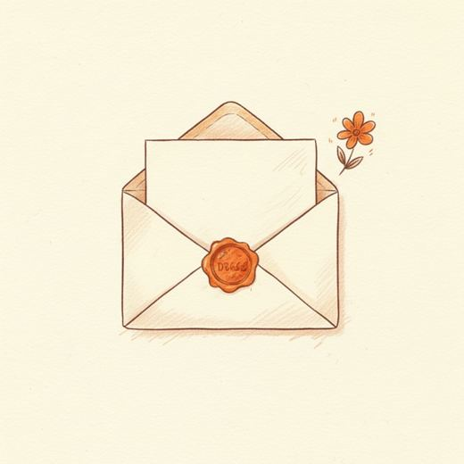
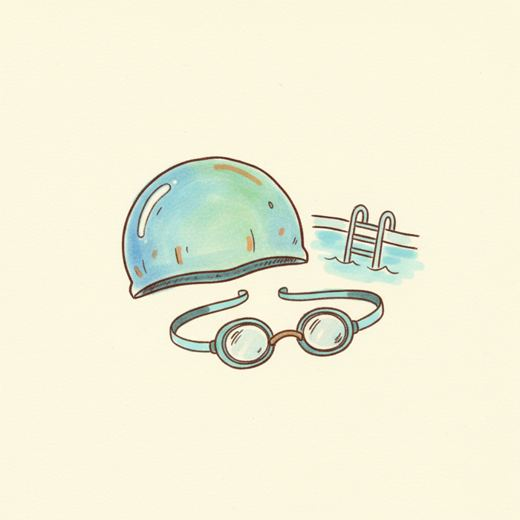
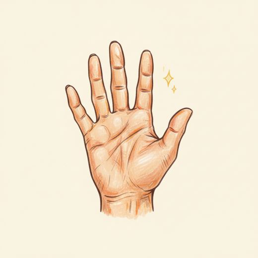

안녕하세요
강좌를 대신 찾아보고, 신청도 대신 해 드려요
수원도시공사
먼저 두 가지만 여쭤볼게요.
성함하고, 회원가입이 돼 있는지요.
회원이 아니면 신청을 못 해요.

말씀만
하세요
편지 쓰듯, 하고 싶은 걸 그냥 말하면 돼요
“수영 신청할 수 있는 거 있어?”
“어르신 강좌 뭐 있어?”

지금 할 수
있는 거예요
누르면 그걸로 신청할게요
이 정보로
신청할게요
신청서
이름—
반—
시간—
생년·주소·전화적어둔 것 그대로
한 번 적어두신 것을 제가 대신 넣어요. 주민번호 뒷자리·계좌·비밀번호는 저장하지 않아요.
제가 대신
하고 있어요
—
공단 통합예약
제가 보고 있는 화면화면을 열고 있어요…

다 되면 이 화면에 소식이 떠요. 화면은 그대로 두셔도 돼요.
생년월일을
말해 주세요
예를 들어 「천구백육십년 삼월 오일」
문자로 온
숫자를 말해 주세요
본인 확인 문자가 왔어요. 거기 있는 숫자 여섯 개예요
접수됐어요
접수됨
—
다음—
알림결과 나오면 챙겨드림에 소식이 떠요
사이트에 실제로 적힌 것만 알려드려요. 순번·당첨 가능성은 추측하지 않아요.
이건 이렇게
하셔야 해요